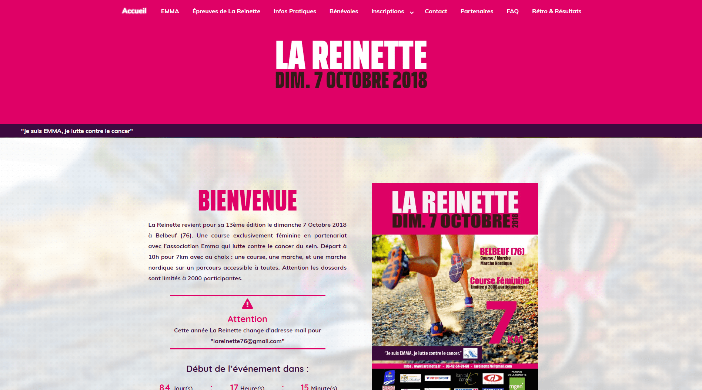
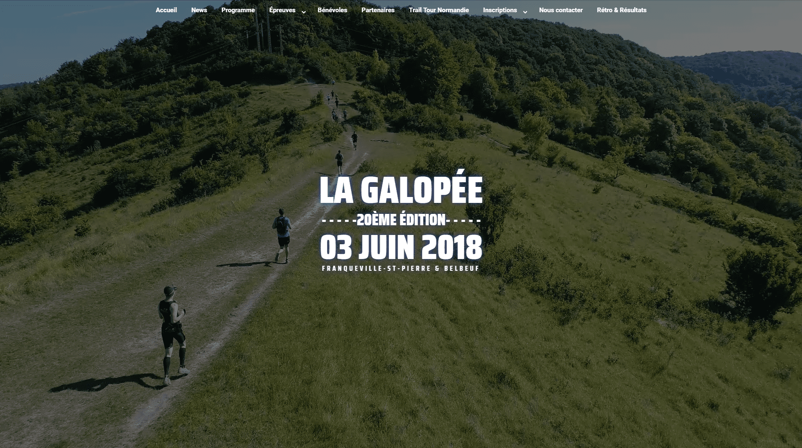
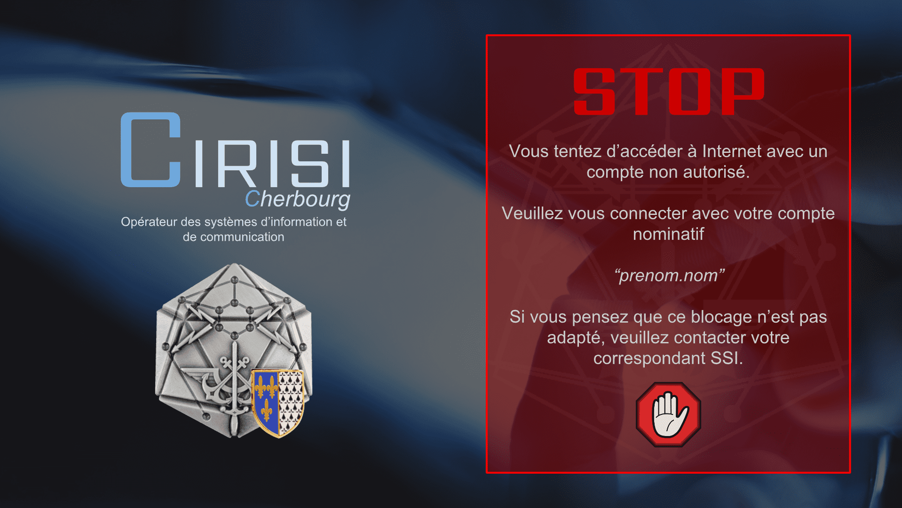
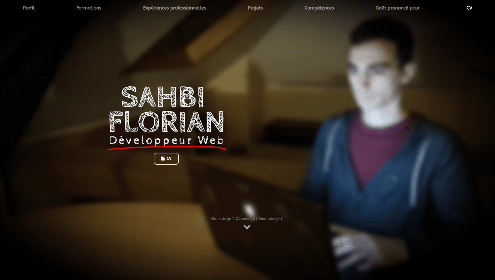
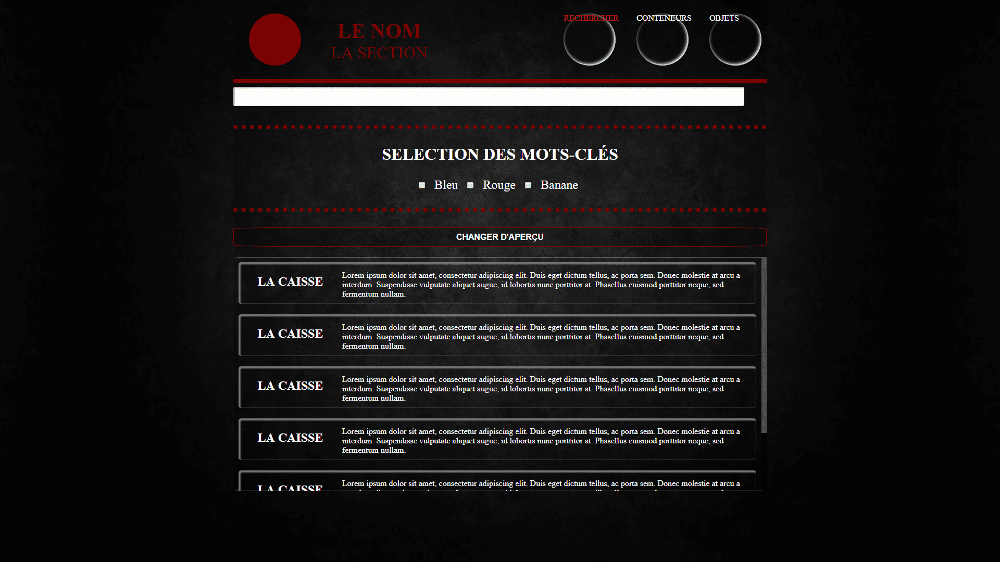
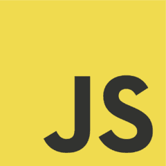
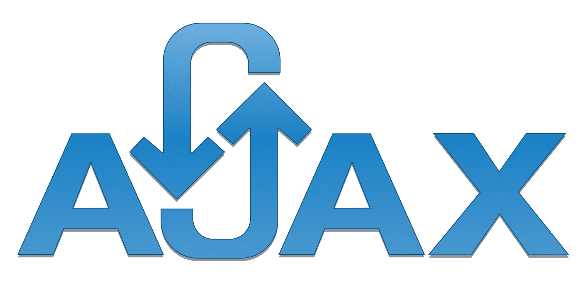

La Reinette » est le second événement organisé par l’Entente Athlétique du Plateau Est (EAPE). C’est une course en partenariat avec l’association Emma qui lutte contre le cancer du sein. Il est exclusivement destiné aux femmes et fêtera sa 13ème édition le dimanche 7 octobre 2018 en rassemblant 2000 coureuses et marcheuses.
Technologies : wordpress, elementor, html 5, css3, javascript
J’ai créé ce site avec l’idée d’en faire à la fois mon portfolio et mon cv, je voulais que toutes les informations recherchées par le visiteur à mon sujet soient rapidement identifiables et accessibles en une page, le défi étant justement de réussir à présenter tous ces renseignements sur une seule et unique page sans noyer le visiteur dans une masse d’informations indigestes. Pour ce faire j’ai d’abord rassemblé et sélectionné les informations qui me semblaient importantes puis je les ai synthétisé, j’ai ensuite travaillé sur la typographie, les interlignes, les couleurs et le contraste avec un souci de lisibilité des textes et pour la mise en page je me suis tourné vers un design aéré en usant et abusant des espace blancs dans le but de mettre en avant ce qu’ils entourent. Le résultat est un design ou les différentes sections et sous sections défilent les unes après les autres rendant, je l’espère, la navigation fluide et agréable. Pour finir et avec l’espoir de ne jamais perdre le visiteur lors de sa visite, j’ai inséré dans la page un menu fixe lui servant de fil d’Ariane en lui indiquant sa position sur celle-ci grâce aux intitulés mis en surbrillance au fur et à mesure de sa visite. Intitulés sur lesquels il est également possible de cliquer pour se rendre directement à la section correspondante présente sur la page.
Bénévolat | 5 semaines | Mai / Juin 2018

lagalopee.fr
La Galopée » est l’évènement organisé par l’Entente Athlétique du Plateau Est (EAPE). L’évènement fêtera sa 20ème édition le dimanche 3 juin 2018 et rassemble généralement plus de 1000 coureurs et marcheurs. Il est composé de six épreuves différentes permettant à tout le monde, coureurs expérimentés ou débutants, de trouver chaussure à son pied.
Technologies : wordpress, elementor, html 5, css3, javascript
J’ai créé ce site avec l’idée d’en faire à la fois mon portfolio et mon cv, je voulais que toutes les informations recherchées par le visiteur à mon sujet soient rapidement identifiables et accessibles en une page, le défi étant justement de réussir à présenter tous ces renseignements sur une seule et unique page sans noyer le visiteur dans une masse d’informations indigestes. Pour ce faire j’ai d’abord rassemblé et sélectionné les informations qui me semblaient importantes puis je les ai synthétisé, j’ai ensuite travaillé sur la typographie, les interlignes, les couleurs et le contraste avec un souci de lisibilité des textes et pour la mise en page je me suis tourné vers un design aéré en usant et abusant des espace blancs dans le but de mettre en avant ce qu’ils entourent. Le résultat est un design ou les différentes sections et sous sections défilent les unes après les autres rendant, je l’espère, la navigation fluide et agréable. Pour finir et avec l’espoir de ne jamais perdre le visiteur lors de sa visite, j’ai inséré dans la page un menu fixe lui servant de fil d’Ariane en lui indiquant sa position sur celle-ci grâce aux intitulés mis en surbrillance au fur et à mesure de sa visite. Intitulés sur lesquels il est également possible de cliquer pour se rendre directement à la section correspondante présente sur la page.
Stage | 6 semaines | Janvier / Février 2018

Naval Group - Cirisi
NAVAL GROUP » est le leader européen du naval de défense et un acteur majeur dans les énergies marines renouvelables. Le groupe conçoit, réalise et maintient en service des sous-marins et des navires de surface. Il fournit également des services pour les chantiers et bases navals. Enfin, le groupe propose un large panel de solutions dans les énergies marines renouvelables.
Naval Group - Cirisi
Technologies : wordpress, elementor, html 5, css3, javascript
J’ai créé ce site avec l’idée d’en faire à la fois mon portfolio et mon cv, je voulais que toutes les informations recherchées par le visiteur à mon sujet soient rapidement identifiables et accessibles en une page, le défi étant justement de réussir à présenter tous ces renseignements sur une seule et unique page sans noyer le visiteur dans une masse d’informations indigestes. Pour ce faire j’ai d’abord rassemblé et sélectionné les informations qui me semblaient importantes puis je les ai synthétisé, j’ai ensuite travaillé sur la typographie, les interlignes, les couleurs et le contraste avec un souci de lisibilité des textes et pour la mise en page je me suis tourné vers un design aéré en usant et abusant des espace blancs dans le but de mettre en avant ce qu’ils entourent. Le résultat est un design ou les différentes sections et sous sections défilent les unes après les autres rendant, je l’espère, la navigation fluide et agréable. Pour finir et avec l’espoir de ne jamais perdre le visiteur lors de sa visite, j’ai inséré dans la page un menu fixe lui servant de fil d’Ariane en lui indiquant sa position sur celle-ci grâce aux intitulés mis en surbrillance au fur et à mesure de sa visite. Intitulés sur lesquels il est également possible de cliquer pour se rendre directement à la section correspondante présente sur la page.
Stage | 6 semaines | Juin / Juillet 2017

floriansahbi.com
floriansahbi.com » est le site servant de vitrine à mes compétences, et en tant que projet personnel, je peux me permettre de lui faire prendre la direction que je souhaite et y tester sans contrainte ce qui me vient à l’esprit.
floriansahbi.com
Technologies : wordpress, elementor, html 5, css3, javascript
J’ai créé ce site avec l’idée d’en faire à la fois mon portfolio et mon cv, je voulais que toutes les informations recherchées par le visiteur à mon sujet soient rapidement identifiables et accessibles en une page, le défi étant justement de réussir à présenter tous ces renseignements sur une seule et unique page sans noyer le visiteur dans une masse d’informations indigestes. Pour ce faire j’ai d’abord rassemblé et sélectionné les informations qui me semblaient importantes puis je les ai synthétisé, j’ai ensuite travaillé sur la typographie, les interlignes, les couleurs et le contraste avec un souci de lisibilité des textes et pour la mise en page je me suis tourné vers un design aéré en usant et abusant des espace blancs dans le but de mettre en avant ce qu’ils entourent. Le résultat est un design ou les différentes sections et sous sections défilent les unes après les autres rendant, je l’espère, la navigation fluide et agréable. Pour finir et avec l’espoir de ne jamais perdre le visiteur lors de sa visite, j’ai inséré dans la page un menu fixe lui servant de fil d’Ariane en lui indiquant sa position sur celle-ci grâce aux intitulés mis en surbrillance au fur et à mesure de sa visite. Intitulés sur lesquels il est également possible de cliquer pour se rendre directement à la section correspondante présente sur la page.
Personnel | 4 semaines | Mars / Avril 2018

Gestion de stocks
Application nomade dont le but est de lister des objets et des conteneurs en associant leurs caractéristiques à des mots-clés. Mais aussi de retourner avec précision, l’emplacement d’un élément disponible dans la base de données que l’utilisateur voudrait localiser dans ses stocks.
Gestion de stocks
Technologies : html 5, css 3, symfony 2
Application nomade réalisée en groupe de quatre étudiants dans le cadre d’un projet scolaire ayant pour but de nous familiariser avec le framework Symfony 2 et ses concepts vus cette année. Mon rôle au sein de l’équipe a été dans un premier temps l’aide à l’élaboration du modèle de données entité-association et du modèle relationnel puis la création des vues utilisées par le contrôleur. J’ai également été en charge de l’aspect visuel de l’application, en définissant sa charte graphique et en utilisant les langages Front-End pour sa mise en forme.
Scolaire | 2017 - 2018

Siogame
SIOGAME est une plateforme de jeux multijoueurs fortement inspirée de FlyOrDie.com qui permet à deux joueurs de s’affronter au tour par tour sur différents jeux de plateau.
Siogame
Technologies : php, sql, ajax
Ce projet a débuté par la création d’un cahier des charges établi par les étudiants, et nos professeurs d’informatique jouant le rôle du client. À la suite de quoi, plusieurs groupes composés de deux ou trois personnes ont été formés. Chacun de ces groupes s’est ensuite occupé de développer un aspect précis de la plateforme comme l’espace utilisateur, un jeu etc… Nous étions deux dans mon équipe, et notre mission consistait à programmer les scripts côté serveur chargés d’assurer le bon déroulement des parties en définissant qui avait la main, ou encore, en analysant le plateau à la recherche d’un coup gagnant. Les clients effectuaient continuellement une requête au serveur pour accéder à un fichier XML mis à jour en fonction des actions réalisés par les joueurs sur le plateau. Ces actions effectuaient une requête (via l’objet XMLHttpRequest) nous envoyant entre autres, les coordonnées du coup qui venait d’être joué. Nous les utilisions alors pour actualiser l’état du plateau sauvegardé dans la DB. Et enfin, le fichier XML était également mis à jour avec ces nouvelles données, en permettant ainsi aux deux joueurs d’actualiser leur plateau de jeu respectif.
Float. Flexbox. Pseudo-class. Pseudo-element. Media Queries. Animations. Transitions. Transforms. Utilisation de différentes librairies d'animation comme Hover.css ou Animate.css.

Elements d'algorithmique (variables, boucles, tableaux, fonctions). Manipulation du DOM. Object.prototype. Objet XMLHttpRequest.
Bonne connaissance de l'environnement CMS. Mise en ligne. Page builder Elementor - Divi.
Algorithmie. Wamp. POO. Model-View-Controlleur (MVC). Sessions et Cookies. Exploitation des données d'un formulaire (GET/POST). Utilisation d'API pour réceptionner des données sous le format JSON/XML. RegEx. Mail...
Conception de bases de données. Modèle entité-association. Modèle logique de données. Contraintes d'intégrité. Jointures. Triggers. Gestion de DB - Select - Insert - Update - Delete. phpMyAdmin.
(Notions - Autodidacte) Concepts. Mise en place d'un serveur. Node Package Manager (NPM). Express.js. Embedded JavaScript templating (EJS).

Utilisé notamment pour la création d'un jeu en ligne où le serveur ne pouvait pas contacter le client de lui-même. J'ai dû utiliser "la technique de push" long polling pour emuler le mécanisme en utilisant Ajax.
Bonne compréhension des notions d'événements et de callback. Utilisation d'Ajax avec Jquery. Ce site n'utilise que Jquery pour ses animations.